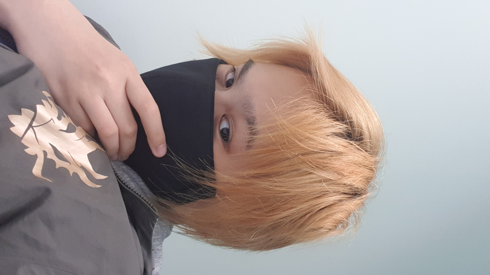

About Me
Hi! I'm Li Jun, but in school I actually go by Hektor.
I hail from Pioneer, Singapore where all my little insanities happen.
Currently I am a Year 2 student of Singapore Polytechnic under the MAD school's Diploma in Game Design and Development.
Even as a student of a design course that is primarily working in the digital media and entertainment industry, I have a great interest in physical built items stemming from a long-time interest in cosplay and theater costuming.
My main area of expertise is actually with textiles and needlework, both by hand and by machine, but I have actually chosen this elective module as a means to expand my skill range into more general fabricataion and design that can apply to both aesthetic and functional intents.
I have always looked up to big-name cosplayers such as KamuiCosplay (Svetlana Quindt) and Yaya Han in their innovative techniques and ideas for both traditional fabrication and modern adaptations of traditional techniques that are now widely used in the international community of cosplay crafting.
Hence, my hopes for this module is that it would equip me with the basic technical skills to be able to push forward in my crafting projects as to bring the standards of local cosplayers to greater heights by giving back to the close knit community I have come to love.